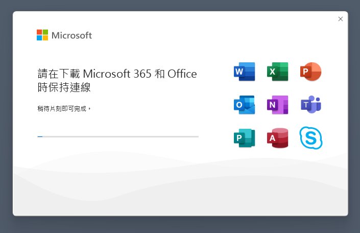
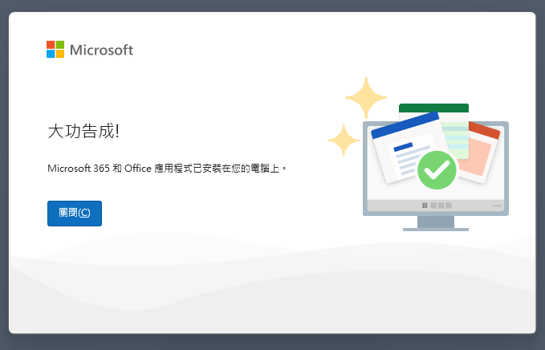
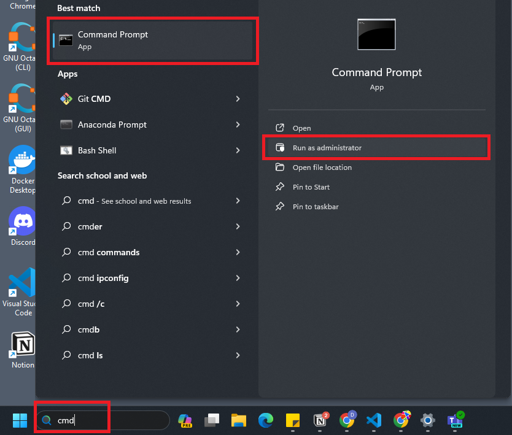
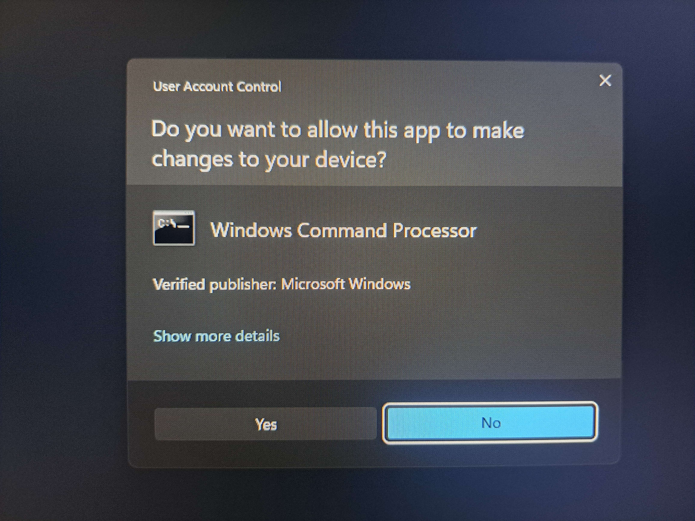
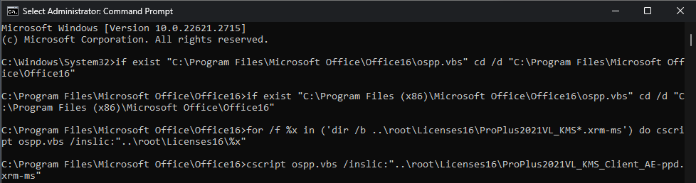
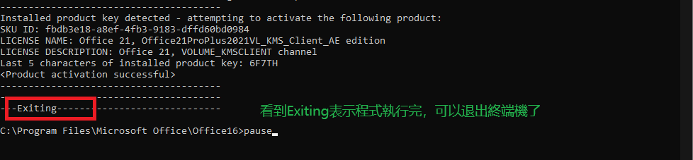
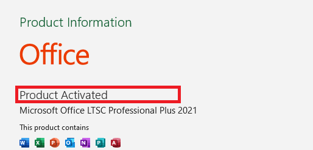

複製7行指令就能夠得到授權
Office 全家桶是微軟需要付費的一整套軟體，就像是 adobe 全家桶一樣。通常學校會給學生有包含“@...edu...” 的電子郵箱，這通常能夠免費獲得使用 office 全家桶的機會，但是當帳號被回收注銷時， office可能就會變成未授權的狀態。 若是之後沒有edu帳號但是又因爲某些因素導致無法得到授權而正常使用office， 下面7行指令理論上能夠幫到你。 操作步驟如下：
-
先前往下載Office Setup：
Office Setup 中文版-32位元 下載 Office Setup 英文版-32位元 下載 Office Setup 中文版-64位元 下載 Office Setup 英文版-64位元 下載 下載完就直接執行 Setup 直到安裝完成。   - 關閉所有與 office 相關的軟體
- 將這個副檔名為cmd的檔案按一次左鍵再按一次右鍵，點選"以系統管理員身分執行"， 當"Windows 以保護您的電腦"出現時，點選詳細資訊，之後選擇仍要執行。  選擇“Yes”，終端機視窗就會出現 
-
複製上面的指令，貼到終端機上，指令就會開始自己執行了。  
if exist "C:\Program Files\Microsoft Office\Office16\ospp.vbs" cd /d "C:\Program Files\Microsoft Office\Office16" if exist "C:\Program Files (x86)\Microsoft Office\Office16\ospp.vbs" cd /d "C:\Program Files (x86)\Microsoft Office\Office16" for /f %x in ('dir /b ..\root\Licenses16\ProPlus2021VL_KMS*.xrm-ms') do cscript ospp.vbs /inslic:"..\root\Licenses16\%x" cscript ospp.vbs /inpkey:FXYTK-NJJ8C-GB6DW-3DYQT-6F7TH cscript ospp.vbs /sethst:kms.msgang.com cscript ospp.vbs /act pause - 最後，我們就能夠能夠從任何一個 office 軟體查看我們已經是已授權的狀態了 